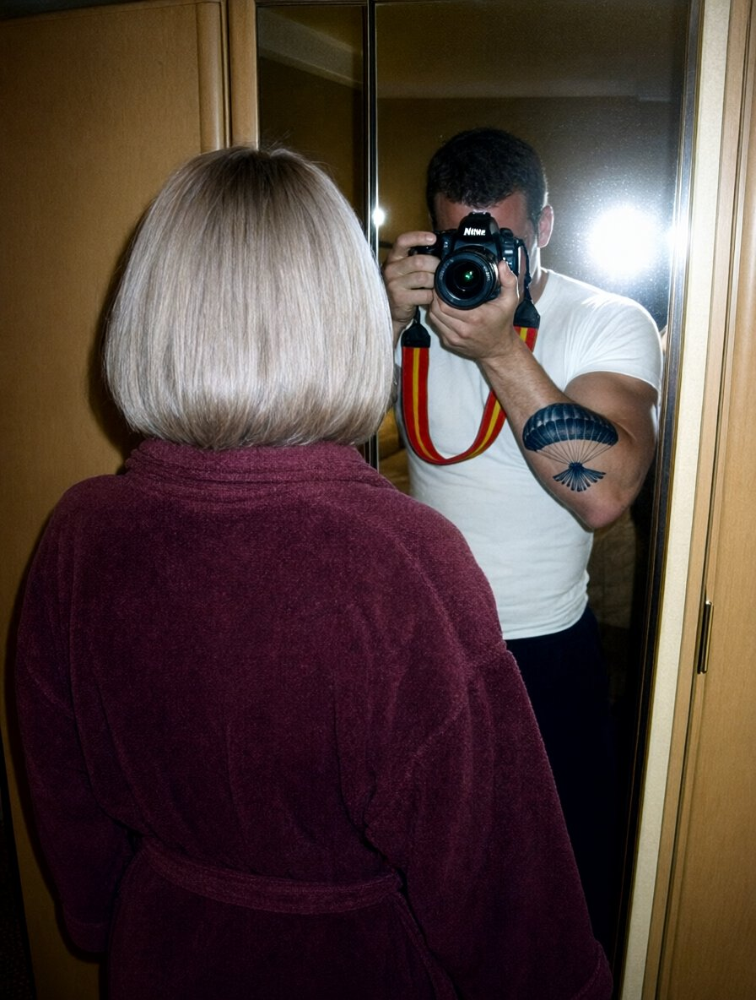

| Файл | Дата | Час камери | Стан |
|---|---|---|---|
| DSC_0388 | 22.09.2007 | 20:14:08 | пошкоджений (заголовок є, даних нема) |
| DSC_0389 | 22.09.2007 | 20:31:40 | пошкоджений (заголовок є, даних нема) |
| DSC_0390 | 22.09.2007 | 20:48:22 | частково (верх кадру, далі сіре) |
| DSC_0391 | 22.09.2007 | 21:03:15 | відновлено повністю |
| DSC_0392 | 22.09.2007 | 21:19:51 | пошкоджений (заголовок є, даних нема) |
| DSC_0393 | 22.09.2007 | 21:34:07 | частково (верх кадру, далі сіре) |
| DSC_0394 | 22.09.2007 | 21:52:33 | пошкоджений (заголовок є, даних нема) |
| DSC_0395 | 22.09.2007 | 22:05:12 | пошкоджений (заголовок є, даних нема) |
| DSC_0396 | 22.09.2007 | 22:18:46 | частково (верх кадру, далі сіре) |
| DSC_0397 | 22.09.2007 | 22:27:30 | відновлено повністю |
| DSC_0398 | 22.09.2007 | 22:36:04 | пошкоджений (заголовок є, даних нема) |
| DSC_0399 | 22.09.2007 | 22:44:19 | частково (верх кадру, далі сіре) |
| DSC_0400 | 22.09.2007 | 22:51:58 | пошкоджений (заголовок є, даних нема) |
| DSC_0401 | 22.09.2007 | 22:57:21 | пошкоджений (заголовок є, даних нема) |
| DSC_0402 | 22.09.2007 | 23:02:40 | частково (верх кадру, далі сіре) |
